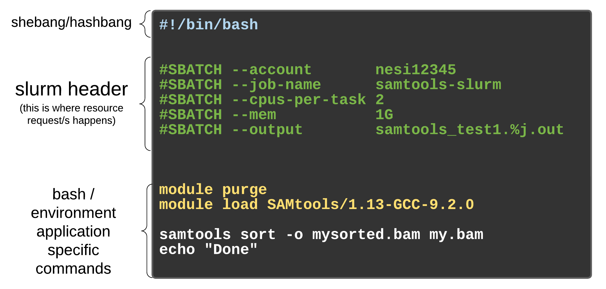
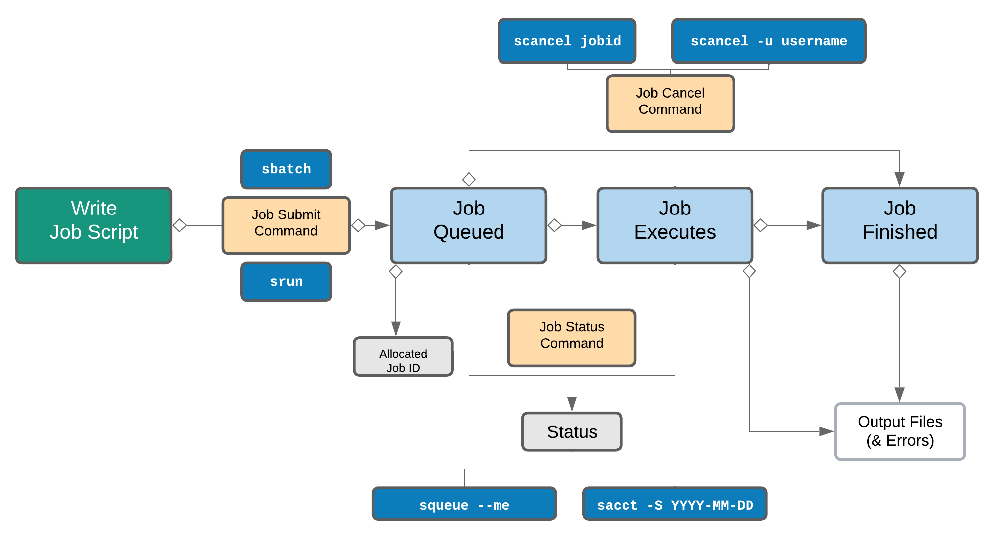

Learning Objectives:
- Modify a template SLURM job submission script
- Run a SLURM job submission script to perform quality assessment for a full-sized FASTQ file
The SLURM scheduler
So far in our FASTQC analysis, we have been directly submitting commands to Biowulf using an interactive session (ie. fastqc -o ../results/fastqc/ -t 6 *.fq). However, we can submit a command or series of commands to these partitions using job submission scripts.
But what if we want to run something on Biowulf that will take a few hours? And we want to make sure it is making the best use of Biowulf resources? That’s where a job scheduler like SLURM (Simple Linux Utility for Resource Management) comes in.
Some main benefits of SLURM (and other systems):
-
Optimizing resources: Making sure HPC resources (CPUs, GPUs, nodes, memory etc) are utilized efficiently and avoid conflict
-
Job scheduling: Manages a queue of jobs so that they are launched without user intervention when resources are available
-
Monitoring: Tracks job states, logs activity, in general helps you troubleshoot and resubmit jobs if needed.
-
User-Friendly Controls: Offers powerful tools for job submission, tracking, and customization (
sbatch,squeue, etc.). We’ll be learning about those today!
GenomicsAotearoa has a really great lesson to supplement the material.
Using SLURM Directives: Performing quality assessment using job submission scripts
First shell script
We didn’t talk about it yet, but a shell script is simply a text file containing commands that are run consecutively.
For example, the following 2-line script would change to your directory and print the tree output to a file in that directory:
cd /data/Bspc-training/$USER/
tree > mytree.txt
If this script is called myscript.bash you could run it like this:
bash myscript.bash
and then you would get the tree output in /data/Bspc-training/$USER.
NOTE: It doesn’t matter where you save this example script, and it will still work correctly. Why?
Elements of a job submission script
Job submission scripts for Biowulf are regular shell scripts, but contain the Slurm options/directives for our job submission. These directives define the various resources we are requesting for our job (i.e number of cores, name of partition, runtime limit ).
Submission of the script using the sbatch command allows Slurm to run your job when its your turn. Let’s create a job submission script to automate what we have done in the previous lesson. Here is a schematic from GenomicsAotearoa displaying the requisite pieces of a Biowulf (or other SLURM-scheduled cluster) submission script:

Specifically, our script will do the following:
- Specify important details to the SLURM scheduler
- Load the FastQC module
- Run FastQC on the full-sized
Mov10_oe_1FASTQ file
Let’s first change the directory to /rnaseq/scripts, and copy a template that already has some SLURM parameters listed and re-name this file something informative:
$ cd rnaseq/scripts
$ cp /data/Bspc-training/shared/rnaseq_jan2025/slurm_template.sh .
$ mv slurm_template.sh mov10_fastqc_full.sh
Open the renamed file with Vim and take a look at the components.The first thing needed in a SLURM script is the shebang line. This tells the command line to interpret this file as a BASH script:
#!/bin/bash
Following the shebang line are the Slurm directives. These are directives that your instructor finds particularly informative. If you are using these instructions without access to the course directory, you could also copy and paste this into a text editor :
#SBATCH --job-name=
#SBATCH --partition=
#SBATCH --mail-type= # Mail events
#SBATCH --ntasks= # Run a single task
#SBATCH --cpus-per-task= # Number of CPU cores per task
#SBATCH --mem= # Job memory request
#SBATCH --time= # Time limit hrs:min:sec
#SBATCH --output= # Standard output log
#SBATCH --error= #error log
--job-name=name of the job (ex. mov10_fastqc_full)--partition=: name of compute partition (ex. norm, largemem, quick) Biowulf partitions--time=: how much time to allocate to job (ex. 08:00:00 for 8 hours) Walltime limits for partitions--cpus-per-task=: Number of CPUs required (ex. ‘8’ for 8 CPUS that can be used for multithreading.--mem=: maximum memory, i.e. 8g (8 gigabytes - note theg)--mail-type=: send an email to your NIH account when job starts, ends or quits with an error (ex. END, ALL)--output=: The name of a log file to send output that would normally be printed to screen (ex. mov10_fastqc.log)--error=: The name of a log file specifically to capture error messages
More about these options and many others can found in the Biowulf User Guide.
Use Vim in insert mode (i) to modify your copied file to use 1 task that makes use of 6 CPUs, which will run on the quick partition for one hour and use 6 gigabytes of memory. Make sure to also give your job and output/error logs informative names!
#!/bin/bash
#SBATCH --job-name=mov10_oe1_full_fastqc
#SBATCH --partition=quick
#SBATCH --mail-type=ALL # Mail events
#SBATCH --ntasks=1 # Run a single task
#SBATCH --cpus-per-task=6 # Number of CPU cores per task
#SBATCH --mem=6g # Job memory request
#SBATCH --time=01:00:00 # Time limit hrs:min:sec
#SBATCH --output=%j.out # Use job ID as a variable
#SBATCH --error=%j.err # Use job ID as a variable
Modify the body of the script
Now in the body of the script, we can include any commands we want to run, specifying that our input file is now a file in the shared class directory. In this case, it will be the following:
## Load modules required for script commands
module load fastqc/0.12.1
## Run FASTQC on the compressed full-sized file in the class shared directory
fastqc -o /data/Bspc-training/$USER/rnaseq/results/fastqc /data/Bspc-training/shared/rnaseq_jan2025/Mov10_oe_1.fq.gz
NOTE: These are the same commands we used when running FASTQC in the interactive session. Since we are writing them in a script, the
tabcompletion function will not work, so please make sure you don’t have any typos when writing the script!
Once done with your script, click esc to exit INSERT mode. Then save and quit the script by typing :wq. You may double check your script by typing less mov10_fastqc.run.
Submitting the Job Script
Now, if everything looks good submit the job!
$ sbatch mov10_fastqc_full.sh
You should immediately see a number pop up. Your job is assigned with that unique identifier JobID. You can check on the status of your job with:
$ squeue -u $USER
Look for the row that corresponds to your JobID. The third column indicates the state of your job. Possible states include PENDING (PD), RUNNING (R), COMPLETING (CG). NOTE: Here is a table of Job State Codes from the Biowulf User Guide.
Once your job is RUNNING, you should also get an e-mail with a subject line like: Slurm Job_id=46252457 Name=mov10_oe1_full_fastqc Began, Queued time 00:01:09.
What happens after job is submitted?
So, while we wait a few minutes for the job script to run, we can think about what actually happens once you submit a script.
-
SLURM reads job parameters from
#SBATCHdirectives in the script. -
SLURM Controller checks your job’s resource requests, priority, and scheduling policies.
-
Job Queued or Scheduled
- If resources are not available, job is marked
PD(Pending). - If resources are available, job is marked
R(Running).
- If resources are not available, job is marked
-
SLURM assigns your job to suitable compute nodes based on your request.
-
SLURM runs the commands in your script, output is sent to
.outand/or.errand/or other files you specify. -
Job finishes and is marked
CD(Completed), or another final state (e.g.,FAILED,CANCELLED), resources are released.
Here is another useful schematic from GenomicsAotearoa summarizing these steps and opportunities to monitor/modify the job once it is running:

After the job has run
Once the job is running, it will take just about 4 minutes to run. Hopefully, you will get another e-mail with a subject like Slurm Job_id=46252457 Name=mov10_oe1_full_fastqc Ended, Run time 00:02:45, COMPLETED, ExitCode 0 . Generally speaking, ExitCode 0 is what we want!
More info about SLURM exit codes can be found in the SLURM manual, but it is also useful to search for codes on the Internet when they actually come up in your analysis. By convention, exit code 0 means “everything’s OK”. A non-zero exit code indicates a problem.
Check out the output files in your directory:
$ ls -lh ../results/fastqc/
There should also be one standard error (.err) and one standard out (.out) files from the job found in /rnaseq/scripts. They are named after the job ID. You can move these over to your logs directory and give them more intuitive names:
$ mv *.err ../logs/fastqc.err
$ mv *.out ../logs/fastqc.out
NOTE: The
.errand.outfiles store log information during the script running. They are helpful resources, especially when your script does not run as expected and you need to troubleshoot the script.
Finally, copy over the HTML output file to your /data/$USER directory so we can open it on a locally mounted drive too:
cp Mov10_oe_1_fastqc.html /data/$USER/
Some useful SLURM commands
To put these all in one place, here are some SLURM commands that you may find useful:
sbatch |
Submit non-interactive (batch) jobs to the scheduler |
squeue |
List all jobs in the queue |
squeue -u $USER |
Show only your jobs |
scancel <jobid> |
Cancel a job |
scontrol show job <jobid> |
Detailed info on a specific job |
freen |
Biowulf tool: give an instantaneous report of free nodes, CPUs, and GPUs on the cluster |
Exercise
-
Take a look at what’s inside the
.errand.outfiles. What do you observe? Do you remember where you see those information when using the interactive session? -
How would you change your script to analyze the 6 files we used in the last episode?
Assignment
Write a SLURM job script in your /script directory called mov10_oe_2_fastqc_full.sh (you can start by copying the template or the script we just ran) that does the following:
-
Uses
/data/Bspc-training/shared/rnaseq_jan2025/Mov10_oe_2.fq.gzas input -
Puts the output file in the same
/results/fastqwe’ve been using -
Only requests 30 minutes of walltime - recall how our job only ended up taking a few minutes to run
-
Comes up with more informative names for the output and error files instead of the Job ID variable (use part of the input filename, perhaps?). Likewise, make any other changes to this script that reference the old file
-
Ask your instructor to look at the script before submitting (copy into
/assignments. Then, go ahead and submit the script usingsbatch!
This lesson has been developed by members of the teaching team at the Harvard Chan Bioinformatics Core (HBC). These are open access materials distributed under the terms of the Creative Commons Attribution license (CC BY 4.0), which permits unrestricted use, distribution, and reproduction in any medium, provided the original author and source are credited.
- The materials used in this lesson was derived from work that is Copyright © Data Carpentry (http://datacarpentry.org/). All Data Carpentry instructional material is made available under the Creative Commons Attribution license (CC BY 4.0).